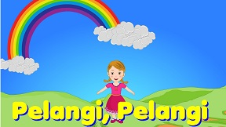
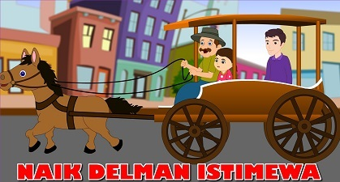
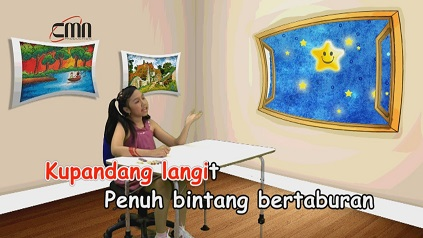
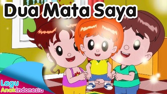
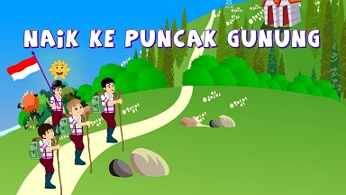
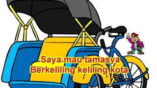
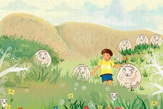
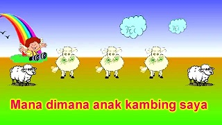

Naik Kereta Api
Naik kereta api ... tut... tut... tut...
Siapa hendak turut
Ke Bandung ... Surabaya
Bolehlah naik dengan percuma
Ayo kawanku lekas naik !
Keretaku tak berhenti lama
Back

Pelangi - Pelangi
Pelangi - pelangi alangkah indahmu
Merah kuning hijau dilangit yang biru
Pelukismu agung siapa gerangan?
Pelangi - pelangi ciptaan Tuhan
Back
Naik Kereta Api
Naik kereta api ... tut... tut... tut...
Siapa hendak turut
Ke Bandung ... Surabaya
Bolehlah naik dengan percuma
Ayo kawanku lekas naik !
Keretaku tak berhenti lama
Back
Seorang Kapiten
Aku seorang Kapiten
mempunyai pedang panjang
Kalau berjalan prok-prok-prok
Aku seorang Kapiten
Back
Kasih Ibu
Kasih ibu, kepada beta
Tak terhingga sepanjang masa
Hanya memberi, tak harap kembali
Bagai sang surya, menyinari dunia
Back

Naik Delman
Pada hari Minggu ku turut ayah ke kota
Naik delman istimewa ku duduk di muka
Ku duduk samping pak kusir yang sedang bekerja
Mengendarai kuda supaya baik jalannya, Hei !
Tuk-tik-tak-tik-tuk tik-tak-tik-tuk tik-tak-tik-tuk
Tuk-tik-tak-tik-tuk tik-tak suara s'patu kuda
Back

Ambilkan Bulan Bu
Ambilkan bulan bu
Ambilkan bulan Bu
yang slalu bersinar dilangit
Dilangit bulan benderang
Cahyanya sampai ke bintang
Ambilkan bulan Bu
untuk menerangi,
tidurku yang lelap
Dimalam gelap
Back

Bintang Kejora
Ku pandang langit
Penuh bintang bertaburan
Berkelap-kelip
Seumpama intan berlian
Tampak sebuah
Lebih terang cahayanya
Itulah bintangku
Bintang kejora yang indah selalu
Back

Dua Mata Saya
Dua mata saya
Hidung saya satu
Dua kaki saya pakai sepatu baru
Dua telinga saya yang kiri dan kanan
Satu mulut saya
Tidak berhenti makan
Back
Lihat Kebunku
Lihat kebunku penuh dengan bunga
Ada yang putih, dan ada yang merah
Setiap hari kusiram semua
Mawar melati, semuanya indah !
Back

Topi Saya Bundar
Topi Saya Bundar
Bundar topi saya
Kalau tidak bundar
Bukan topi saya
Back
Bintang Kecil
Bintang kecil, dilangit yang tinggi
Amat banyak, menghias angkasa
Aku ingin terbang dan menari
Jauh tinggi ketempat kau berada
Back
Balonku
Balonku ada lima
Rupa - rupa warnanya
Hijau kuning kelabu merah muda dan biru
Meletus balon hijau DOR !
Hatiku sangat kacau
Balonku tinggal empat
Kupegang erat - erat
Back

Naik-naik ke puncak gunung
Naik - naik, ke puncak gunung
tinggi - tinggi sekali
Naik - naik, ke puncak gunung
tinggi - tinggi sekali
Kiri - kanan kulihat saja
banyak pohon cemara
Kiri - kanan kulihat saja
banyak pohon cemara
Back
Satu-satu
Satu, aku sayang ibu
Dua dua, juga sayang ayah
Tiga tiga.. sayang adik kakak
Satu dua tiga,sayang semuanya
Back

Tik-tik bunyi hujan
Tik tik tik bunyi hujan di atas genting
Airnya turun tidak terkira
Cobalah tengok dahan dan ranting
Pohon dan kebun basah semua
Tik tik tik bunyi hujan bagai bernyanyi
Saya dengarkan tidaklah jemu
Kebun dan jalan semua sunyi
Tidak seorang berani lalu
Tik tik tik hujan turun dalam selokan
Tempatnya itik berenang-renang
Bersenda gurau meyelam-nyelam
Karena hujan berenang-renang
Back

Becak-becak
Saya mau tamasya
Berkeliling keliling kota
Hendak melihat-lihat keramaian yang ada
Saya panggilkan becak
Kereta tak berkuda
Becak, becak, coba bawa saya
Saya duduk sendiri sambil mengangkat kaki
Melihat dengan asyik
Ke kanan dan ke kiri
Lihat becakku lari
Bagaikan tak berhenti
Becak, becak, jalan hati-hati
Back

Anak Gembala
Aku adalah anak gembala
Selalu riang serta gembira
Karena aku senang bekerja
Tak pernah malas ataupun lengah
Tralala la la la la
tralala la la la la la la
Setiap hariku bawa ternak
Ke padang rumput,dikaki bukit
Rumputnya hijau,subur dan banyak
Ternakku makan tak pernah sdikit
Tralala.......
Back

Anak Kambing Saya
mana dimana anak kambing saya
anak kambing tuan ada di pohon waru
mana dimana jantung hati saya
jantung hati tuan ada di kampung baru
caca marica he hei
caca marica he hei
aca marica ada di kampung baru
caca marica he hey
caca marica he hey
caca marica ada di kampung baru
Back
Burung Kakaktua
Burung kakaktua
hinggap di jendela
Nenek sudah tua
giginya tinggal dua
Trek-jing ... trek-jing ...
Trek-jing tra-la-la
Trek-jing ... trek-jing ...
Trek-jing tra-la-la
Trek-jing ... trek-jing ...
Trek-jing tra-la-la
Burung kakaktua
Back
Pemandangan
Memandang alam dari atas bukit
Sejauh pandang kulepaskan
Sungai tampak berliku
Sawah luas terbentang
Bagai permadani di kaki langit
Gunung menjulang
Berpayung awan
Oh .. Indah pemandangan
Back